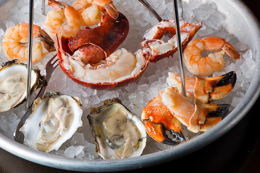

WELCOME TO THE BEST SEA-FOOD RESTAURANT IN TOWN
If it swims we have it!

50 VARITIES OF FISH
It's simply fish’licious

DON'T FORGET TO SEA OUR MENU
We’re not just a restaurant. We’re a cultural experience.